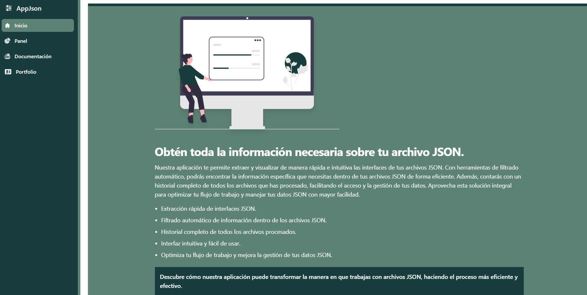

JsonApp.
La aplicación permite a los usuarios cargar archivos JSON ya sea mediante la subida directa de archivos o escribiendo el contenido directamente en la interfaz. Con un sistema intuitivo y fácil de usar, los usuarios pueden convertir sus datos JSON en interfaces TypeScript listas para usar con un solo clic. Además, la aplicación ofrece la funcionalidad de copiar las interfaces generadas al portapapeles y la opción de descargarlas para integrarlas directamente en sus proyectos. Esta combinación de características proporciona a los desarrolladores una herramienta poderosa para agilizar su flujo de trabajo y mejorar la gestión de sus proyectos de TypeScript.